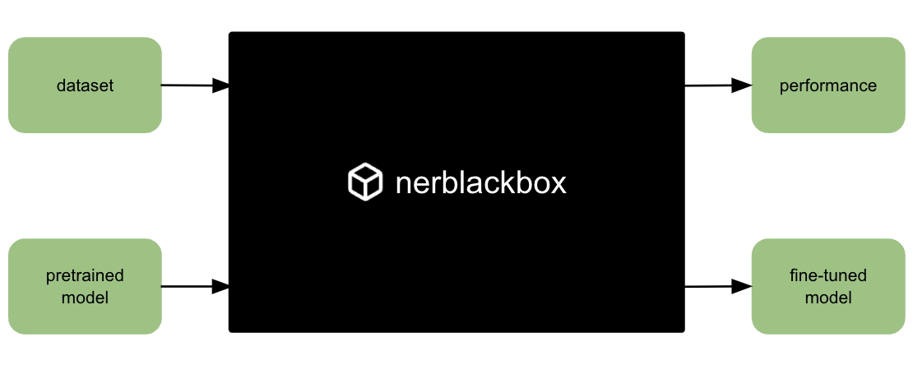

Overview
nerblackbox - a python package to fine-tune transformer-based language models for named entity recognition (NER).
Latest version: 0.0.11
Resources
- Source Code: https://github.com/af-ai-center/nerblackbox
- Documentation: https://af-ai-center.github.io/nerblackbox
- PyPI: https://pypi.org/project/nerblackbox
About
Transformer-based language models like BERT have had a game-changing impact on Natural Language Processing.
In order to utilize Hugging Face's publicly accessible pretrained models for Named Entity Recognition, one needs to retrain (or "fine-tune") them using labeled text.
nerblackbox makes this easy.

You give it
- a Dataset (labeled text)
- a Pretrained Model (transformers)
and you get
- the best Fine-tuned Model
- its Performance on the dataset
Installation
pip install nerblackbox
Usage
-
Specify the dataset and pretrained model in an
Experiment Configuration Filemy_experiment.ini
dataset_name = swedish_ner_corpus pretrained_model_name = af-ai-center/bert-base-swedish-uncased -
and use either the
CLI (Command Line Interface)or thePython APIfor fine-tuning and model application:fine-tuning and model application
nerbb run_experiment my_experiment # fine-tune nerbb get_experiment_results my_experiment # get results/performance nerbb predict my_experiment annotera den här texten # apply best model for NERnerbb = NerBlackBox() nerbb.run_experiment("my_experiment") # fine-tune nerbb.get_experiment_results("my_experiment") # get results/performance nerbb.predict("my_experiment", "annotera den här texten") # apply best model for NER
See Guide for more details.
Features
- GPU Support
- Hyperparameter Search
- Early Stopping
- Multiple Identical Runs
- Language Agnosticism
Based on: Hugging Face Transformers, PyTorch Lightning, MLflow
Citation
@misc{nerblackbox,
author = {Stollenwerk, Felix},
title = {nerblackbox: a python package to fine-tune transformer-based language models for named entity recognition},
year = {2021},
url = {https://github.com/af-ai-center/nerblackbox},
}